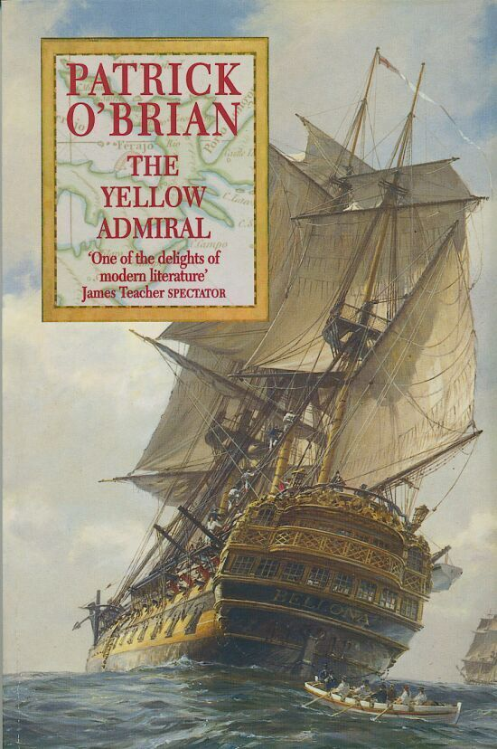
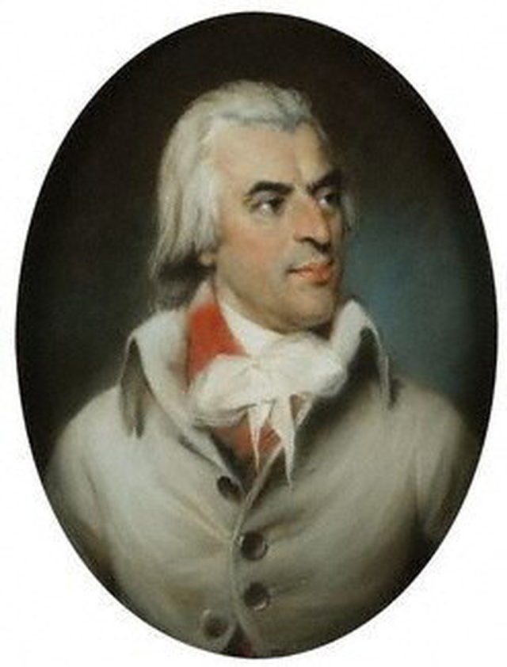
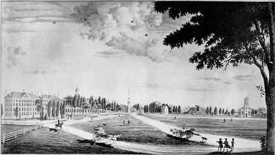
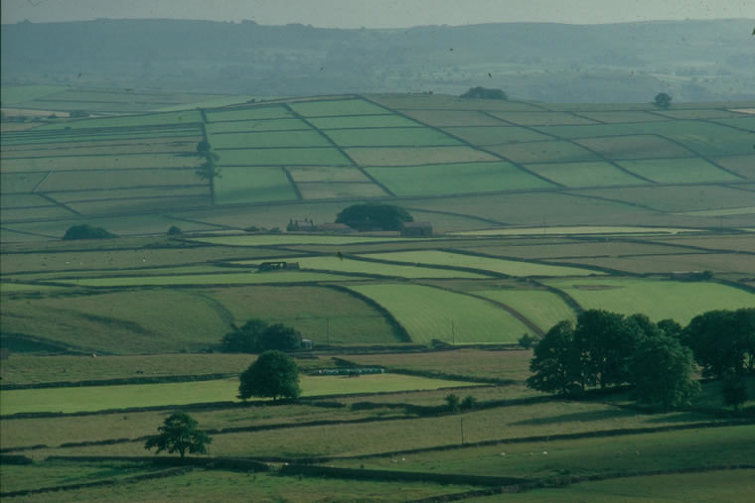
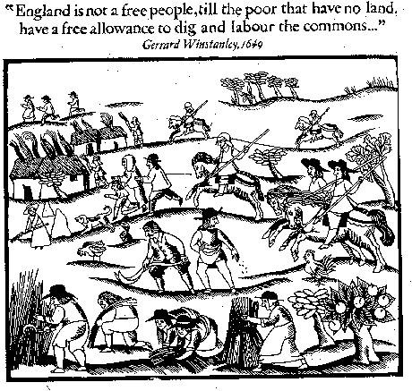
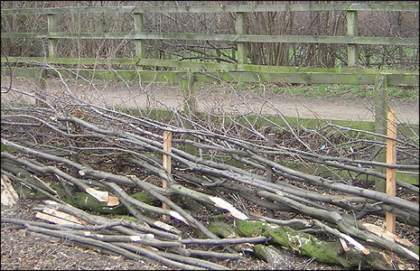
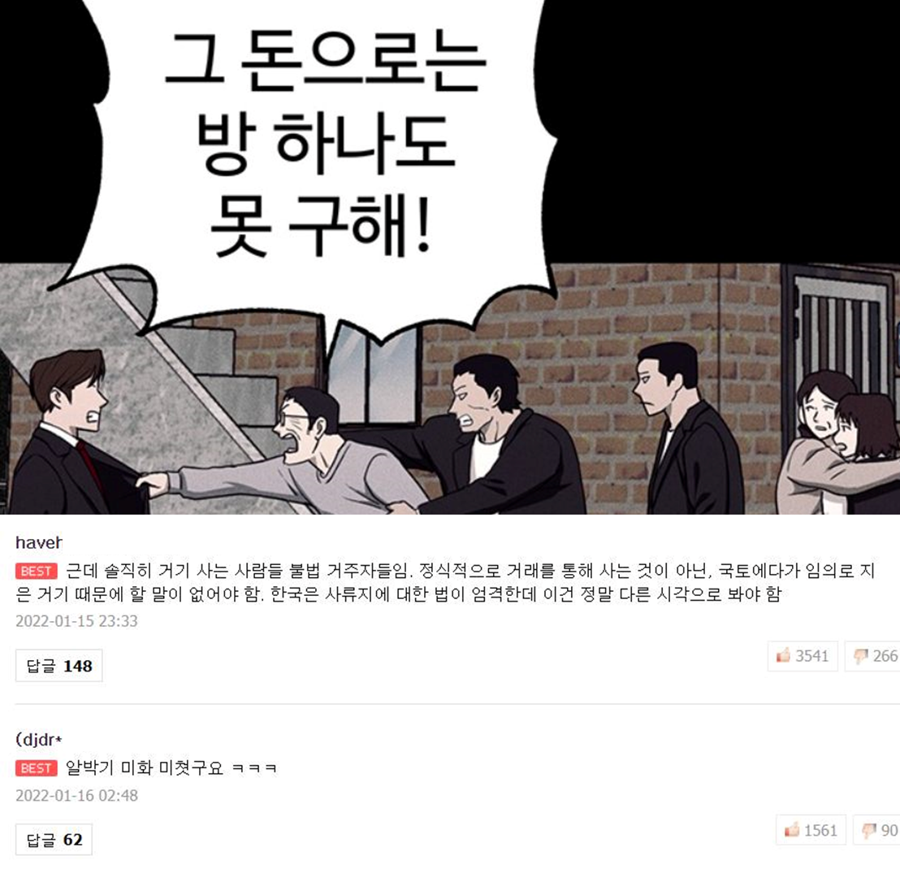

잭 오브리가 말하는 엔클로저 운동 - 공유지의 비극
게시: 2022-03-03T06:30:50+09:00
소규모 자영농의 몰락은 미국에서만 일어난 일도 아니고, 또 20세기 들어서서 일어난 일도 아닙니다. 영국에서는 이미 17세기부터 진행되던 일이고, 특히 나폴레옹 전쟁 동안에 급속도로 진행된 일입니다, 소위 말하는 인클로저(inclosure, 당시 스펠링은 enclosure가 아니라 inclosure였고, 지금도 법률 용어로는 inclosure라고 한다는군요) 운동이라는 것이었지요. 아마 고딩 세계사 시간에들 배우셨을텐데, 그것이 대체 무엇을 뜻하는지, 시험에는 나오지 않지만, Patrick O'Brian의 나폴레옹 전쟁 소설인 'Yellow Admiral'을 통해 공부해보도록 하시지요.

Yellow Admiral by Patrick O'Brian (배경 : 1814년 영국) --------------------------------------------------- (스티븐 머투어린과 잭 오브리 함장은 긴 항해에서 돌아와 잭 오브리의 고향에서 공유지를 산책하며 이야기를 나누는 중입니다.) 스티븐이 말했다. "그 인클로저라는 것에 대해 이야기 좀 해주겠나, 잭 ? 그에 대해서 자주 듣기는 했는데, 어떤 이들은 나라를 식량 부족에서 구하는 거라고도 하고, 또 다른 이들은 그건 그저 땅을 부자들에게 몰아주고 노동자들의 임금을 내리는 것에 불과하다고도 하더군. 이제 전쟁도 거의 끝나가니까 - 아, 물론 종전 이야기는 내가 하는 이야기는 아니고, 그런 말들이 들린다 이거지 - 곧 수입 곡물이 다시 쏟아져 들어올 거고, 그러니까 이제 구시대의 질서를 어지럽힐 이유가 없지 않을까 싶네." "더 넓은 문제에 대해서는" 잭이 말했다. "난 뭐라고 말할 자격이 없네. 그런 문제에 대해서는 아서 영(Arthur Young)이나 조 경(Sir Joe)에게 맡겨야지. 하지만 인클로저 초기에 정말 적절한 땅에 대해서는 오래된 넓은 공유지(common)를 인클로징하는 것이 우리나라의 곡물 생산량을 늘이는데 정말 기여를 했다네. 하지만 그 기간 내내 나는 - 사실 우리 둘다 - 바다에 나가 있었으니까, 내 동료 의원들 십분의 구가 해군 문제에 대해 떠들 자격이 없는 것처럼, 나도 하원에 출석하여 인클로저에 대해 왈가왈부할 자격은 없다네. 하지만 이 두 특정 공유지에 대해서는, 난 정말 그 전후 사정을 잘 알고 있고, 또 이 공유지를 인클로징 하는 것에 대해 절대적으로 반대하는 입장이라네. 그리고 그게 내가 위원회에 나가서 분명하고 우렁차게 말할 내용일세."

(잭이 말하는 아서 영이라는 사람은 당시 영국의 농업, 경제, 통계에 대해 글을 썼던 작가입니다. 1820년에 사망했지요.)
"위원회라니 ?" "물론 의회 위원회 (parliamentary committee) 말일세." "아, 그런가 ? 잭, 처음부터 이야기하세. 누가 인클로징을 시작했나 ? 그럴 권력과 권위는 어디서 오는 건가 ? 누가 법을 만드는 거지 ?" "법에 대해서는 말일세, 모든 장원에는 자체적인 법이 있다네. 그리고 법원은 언제나 'Consuetudo loci observanda est' 라고 말하지. (지역 관습법을 준수해야 한다는 뜻의 라틴어. 영국법은 유럽 대륙과는 달리 불문법 위주라는 것을 고등학교 때 배우셨던가요 ?)" 잭은 스티븐을 쳐다보고 다시 "Consuetudo loci observanda est" 라고 좀더 크게 말하고는 계속 이야기를 이어갔다. "하지만 자네에게 그걸 번역해 줄 필요는 없겠지. 그리고 그 consuetudos (관습법)이라는 것이 장원마다 놀랄 정도로 다르단 말일세. 서로 거의 맞붙어 있는 울콤 공유지(Woolcombe Common)와 시몬 초지(Simmon's Lea)에서만 해도, 연못에서 고기를 잡을 권리(piscary)나 땔감이나 목재를 벌채할 권리(estovers)가 상당히 다르다네. 가령 여기 시몬 초지에는 공유 토탄 채굴장이 아예 없지. 게다가 다른 수많은 권리들, 가령 한더미 풀을 벨 권리, 장작을 구할 권리(fire-bote), 건초를 만들 권리(hey-bote), 집을 지을 권리(house-bote), 덤불을 채취할 권리(underwood), 초지에서 건초를 벨 권리(sweepage) 등등이 교구마다 다 다르지. 하지만 모두가 까마득한 옛날부터 관습에 의해 엄격히 준수되는 것들이고, 마을에서 주민들마다 한자리를 차지하게 해주는 것들이지. 마치 배의 승무원들처럼 말이야. 오해하지 말게, 스티븐, 난 공유 경작지나 방목지에 대해 말하는 것이 아니라 귀족이 경작하지 않는 황무지(waste)에 대해 말하는 거라네. 그 황무지를 요즘에는 대개 공유지(common)이라고 부르지. 대개의 경작지나 방목지는 이미 오래 전에 인클로즈되었어. 비록 시몬 초지에 딸려 있는 것들이 좀 남아 있긴 하지만 말이야."

(1808년 당시 캠브리지 커먼 Cambridge Common의 모습이랍니다)
중략... "인클로저는 대개 공유지에 대해 가장 큰 권리를 가진 사람들이 각자의 권리 비율에 따라 공유지를 몇개의 사유지로 나눠가지자고 동의하는 것에서 시작한다네. 권리자들이 모두 동의한다는 것은 아니고, 그 중 많은 수가 동의한다는 거지. 그러면, 교구 목사의 축복 하에, 또 그들이 설득할 수 있는 가능한 한 많은 수의 신사들, 자영농들 (yeomen), 그리고 땅 소유자들 (freeholders)의 동의 하에, 적절한 사람들을 시켜 땅을 측정하고 지도를 만들게 한다네. 이게 끝나면 하원에 청원서를 제출하는거야. 개별 법안을 제출할 허가를 부탁해서, 의회에서 공유지 분할을 인가할 수 있도록 하는 법을 만드는 거지." "겉보기에는 꽤 공정한 절차같은데. 결국 국가란 그런 선상에서 운영되는 거니까 말일세. 다수가 항상 옳은 거고, 그게 마음에 안드는 사람들은 참는 수 밖에 없는 거니까." "그게 만약 배심원이나 교구위원(vestry)같은 거라서 모든 사람들이 목소리를 낼 수 있고, 다른 사람들도 말하는 사람이 어떤 사람인지 알 수 있다면, 또 그래서 그 사람의 의견이 그 사람의 평소 평판에 비례하는 무게를 가진다면야 정말 공정하겠지. 하지만 이 경우에는 말일세, 다수라는 것은 사람 머리수로 결정되는 것이 아니라 그 권리의 가치에 따라 결정된다네. 그리피스(Griffiths)는 최근에 이주해 온 꽤 부유한 사람인데, 아마 10만 파운드에 해당하는 권리를 가지고 있을 걸세. 내 숲지기인 하딩과 농장에서 일하는 그 친척들은 지난 수백년 동안 모두 합쳐서 아마 200~300 파운드 정도의 권리를 가진다네. 그러니 그들의 투표권이 얼마나 되겠나 ? 그리피스 말고도 거물급이 3~4명 더 있네. 웨스트포트에 사는 내 사촌인 브램튼은 그의 농장 세개를 합치고 싶어 하는데, 공유지가 그 농장들 사이로 길게 뻗쳐 있다네. 우리가 지난번 서아프리카 연안을 항해 중일 때, 그들은 다수의 권리의 지지를 받으며 청원서를 제출했지. 상당한 크기의 토지를 소유한 사람이 그 땅에서 생계를 벌어가는 마을 사람들로부터 동의 서명을 받아내는 것이 얼마나 쉬운지는 굳이 말하지 않아도 이해할 거라 믿네. 그들이 서명하는 서류의 내용은 그들이 공유지에 대해 가지는 권리를 빼앗아 가는 거라네. 그러면 한참 뒤에 그 청원서를 제대로 정리해서 법안을 만들고, 그리피스가 그걸 하원에 제출하지. 평상시 하는 대로 그 법안을 2번 낭독하는데, 물론 아무도 그 내용에 대해서는 관심을 두지 않는다네. 그러면 그걸 위원회에 넘기지. 내가 이야기한 의회 위원회가 바로 그거라네. 만약 그 위원회가 그 법안에 대해 긍정적인 보고를 올리면, 그 법안을 세번째로 낭독하고는 논의도 거의 없이 통과시킨다네. 그러면 판무관(commissioner)들이 내려와서 공유지 분할을 시작하는 걸세. 하지만 내가 그걸 막을 수만 있다면, 위원회는 긍정적인 보고를 올리지 않을거야."

(하긴 누가 봐도 저렇게 질서정연하게 구분된 경작지가, 아무렇게나 숲과 늪지가 얽혀 있는 비개간지보다는 경제적 가치가 크지요.)
중략... "잭," 스티븐이 말했다. "난 다수의 본질에 대한 자네 의견을 곰곰히 생각해보았는데, 자네의 기묘하게 격정적이고 급진적인데다 심지어 - 용서하게 - 민주적인 발언, 그러니까 '일인당 한표의 투표권'이라는 반역에 가까운 사상을 암시하는 발언이 까딱하면 신성한 사유 재산권에 대한 공격으로 해석될지도 모른다는 생각이 들더군. 자네처럼 하원에서 토리(Tory, 당시의 보수당)당을 지지하는 사람이 어떻게 그런 생각을 가지는지 궁금하군." "아 그건 어렵지 않네." 잭이 말했다. "그건 그저 규모와 환경의 문제야. 모두들 큰 규모에서 보면 민주주의란 웃기는 넌센스에 불과하다는 걸 잘 알아. 대중의 감정을 조작하면서 사리사익만 챙기는 시끄러운 정치꾼들은 국가, 또는 심지어 지역구 하나조차도 제대로 운영할 수 없다네. 민주주의의 온상이라고 할 수 있는 브룩스(Brooks's, 당시 런던의 유명 클럽 이름. 클럽에 대해서는 나폴레옹 시대의 클럽 이야기 참조)조차 그 운영은 관리자가 수행한다네. 그게 마음에 안드는 멤버들은 다른 일을 하던가 부들(Boodle's) 클럽으로 옮겨간다네. 군함 같은 경우야말로 독재 정치로 운영되지 않으면 정말 죽도 밥도 안된다네. 혁명 전쟁 발발 초기에 불쌍한 프랑스 해군에 무슨 일이 생겼는지 자네도 알겠지..." "잭, 나도 전함이나 심지어 작은 보트에서조차 문자 그대로의 민주주의가 통하지 않는다는 것 정도는 안다네. 그러기엔 내가 바다 일을 꽤 잘 알쟎나." 스티븐이 약간의 자기 만족과 함께 덧붙였다. "하지만 작은 규모에서는 말일세, 비록 '일인당 한표의 투표권'이라는 것은 분명히 범죄에 가까운 말이지만, 모두들 사형수의 목숨을 결정하는 배심원단에서는 그 원칙을 받아들인다네. 인클로저라는 것은 바로 이 규모에 들어가네. 그것도 사람의 목숨을 정하는 일이거든. 내가 항해에서 돌아와서 그리피스와 그 친구들이 내 아버지를 설득하여 울콤 공유지를 인클로즈하도록 했다는 것을 알기 전에는, 정말 그것이 사람의 목숨을 정하는 일이라는 것을 제대로 깨닫지 못했었네. 당시 아버지는 돈에 쪼들리고 계셨거든. 울콤 공유지는 비록 시몬 초지처럼 멋진 곳은 아니었지만, 난 그곳이 좋았네. 메추리와 멧도요새도 많았고 말이야. 그 울콤 공유지가 싹쓸려서 평탄화되고, 연못의 물을 빼고, 울타리를 쳐서 최후의 땅 한평까지 밀밭으로 경작되면서 거기 있던 오두막이 헐리고 거기 살던 공유지 사람들이 생계의 절반과 생활의 낙 전부를 잃고 쫓겨나 근심걱정이 그득한 날품팔이 노동자가 되는 것을 보았을 때, 스티븐, 난 정말 마음이 아팠다네. 난 어릴 때 어머니를 잃고는 거칠게 자랐거든. 어쩔 때는 마을 학교에 다녔고, 어쩔 때는 그냥 마구잡이로 놀았다네. 그래서 마을 사람들을 어릴 때부터 잘 알고 지냈지. 그런데 그 사람들이 지주나 농장주, 또는 빈민 구제관들의 자비심에 의존하여 살아가는 것을 보면, 정말 마음이 아파서 거기 다시 가고 싶은 마음이 들지 않을 정도라네. 그래서 시몬 초지에는, 정말 막을 수만 있다면, 그런 일이 생기지 않도록 할 작정이네. 과거의 관습에는 분명히 비효율적인 면이 있지. 하지만 여기서는, 내가 아는 부분만 말하면, 그게 인간적인 삶이었어."

(저 그림에 나온 Gerrard Winstanley의 말을 번역하면 이렇습니다. '가진 땅이 없는 빈민들이 공유지에서 자유롭게 경작하고 노동할 권리를 가지지 못한다면, 잉글랜드는 자유 국가가 아니다.' 저 Gerrard Winstanley라는 양반은 17세기 중반의 프로테스탄트 종교 개혁가였는데, 빈민들을 이끌고 정말 공유지를 무단 침입하여 농사를 지어, 그 수확물을 무료로 나눠주는, 소위 Diggers라는 공동체를 이끌기도 했습니다. 물론 Diggers는 결국 지주들이 고용한 폭력배들에게 몽둥이 찜질을 당하고 해체되었지요. 요즘과 뭐 과히 다르지 않습니다.)
중략... "다시 공유지 이야기를 해도 되겠나 ?" 스티븐이 말했다. "공유지에서 살던 주민들은 그래도 인클로저 때문에 잃어버린 권리에 대한 보상을 뭔가 받지 않던가 ?" "이론상으로는 그렇다네." 잭이 말했다. "그리고 판무관들이 동정심이 있다면 정말 뭔가를 받는다네. 만약 그들이 자신의 권리에 대해 법적으로 증명할 수만 있다면 말이지. 그럴 경우에는 공유지의 일부를 받게 되지. 이렇게 꽤 큰 공유지의 경우 두개 몫만 있어도 자기 오두막 옆에 한 3/4 에이커의 땅을 받게 될거야. 하지만 3/4 에이커로는 암소 한마리와 양 6마리, 그리고 거위 작은 무리 하나를 키울 수가 없다네. 그 전에 이용할 수 있었던 공유지에서는 그게 가능했지. 하지만 그 정도의 땅을 받는 것도 굉장히 드문 일이야. 많은 경우 토지는 여러 조각으로 나누어져 있는데, 때로는 꽤 멀리 떨어져 있어. 그런 땅을 받을 때는 종종 각 구역의 땅에 울타리를 쳐야 한다는 조건이 붙기도 하고 때로는 연못을 비워내야 한다는 조건이 붙기도 해. 가난한 사람들은 그런 조건을 충족시킬 수가 없으니까, 자신의 몫을 고작 5파운드 정도에 팔아버리지. 그러고나면 그 사람은 생계를 전적으로 노동 임금에 의존해야 해. 그나마 그런 날품팔이 일거리를 얻을 수 있을 때 이야기지. 그는 농장주의 손아귀에 들어가는거야."

(이렇게 울타리 치는 것도 다 비용이고 투자지요. 전에 대관령 양떼목장 가보니까, 그 넓은 땅을 수년간에 걸쳐서 주인 양반이 직접 울타리를 쳤다고 하더군요.)
------------------------------------------------------------------------------------------- 저는 경제 정의란 무엇인가에 대해서 말할 자격이 있는 사람은 아닙니다. 다만, 결국 저렇게 사회적으로 부가 소수에게 몰리는 현상은 '어쩔 수 없는' 현상이고, 또 실제로 그렇게 되어야 국가 전체의 부가 효율적으로 증진된다는 것은 사실인 것 같습니다. 또 저런 인클로저 운동이, (닭이 먼저인지 달걀이 먼저인지는 잘 모르겠습니다만) 영국의 산업 혁명을 위한 값싼 노동력을 제공해준 것도 사실이지요. 다만, 그런 경향을 피할 수만 있다면 피하고 싶은 것도 사실이네요. 아무래도 저를 비롯한 대부분의 사람들은 그로 인해서 득을 보는 사람은 아닌 것 같거든요. 하지만 그래야 '국격'이 높아진다면 ? 글쎄요... 솔직히 국격 높은 국가보다는 그냥 나도 행복하고 내 이웃들도 행복해서, 그냥 전반적으로 행복한 나라에서 살고 싶습니다.
오늘 글은 인클로저 운동에 대해 나왔던 당시 풍자시에 한 구절을 인용하며 끝내지요.
They hang the man, and flog the woman, 공유지에서 거위를 훔치다 잡히면 That steals the goose from off the common; 남자는 교수형에 처해지고, 여자는 채찍질로 벌을 받지. But let the greater villain loose, 하지만 더 큰 악당은 아무 벌도 받지 않는다네. That steals the common from the goose. 거위로부터 공유지를 훔치는 악당말이야.
** 오늘 글은 다음 편에 나올 '1813년 나폴레옹의 전비 마련'에서 언급할 공유지 매각에 대한 부연 설명격의 글입니다. DAUM 블로그에 제가 2011년에 올렸던 글을 재탕했습니다. 실은 최근에 '존망코인'이라는 네이버 웹툰을 보다가 철거민 관련하여 용역깡패가 묘사된 에피소드에 대해서, 최다 추천을 받은 댓글이 아래인 것을 보고 깜짝 놀랐습니다. 이게 정말 요즘 젊은이들의 시대 정신일까요? 웹툰 댓글보고 세상을 읽으려면 안되겠지만, 솔직히 매우 걱정됩니다.
